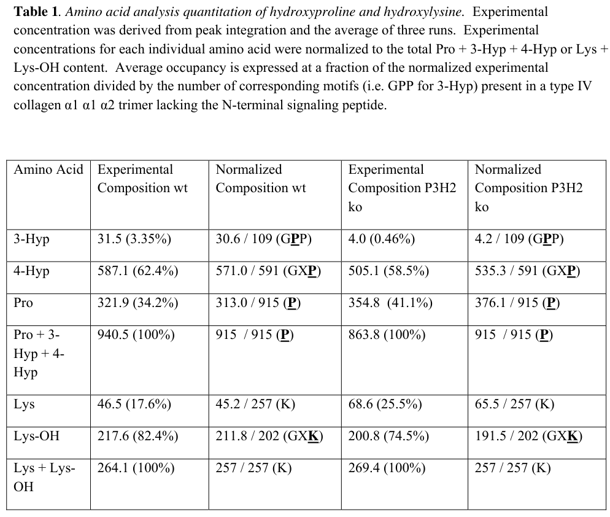

P3H2 (prolyl 3-hydroxylase 2, also LEPREL1/MLAT4) is an endoplasmic reticulum-lumenal, 2-oxoglutarate/Fe(II)-dependent dioxygenase (EC 1.14.11.7) of the leprecan/prolyl 3-hydroxylase family (P3H1/P3H2/P3H3). It catalyzes post-translational formation of (trans-)3-hydroxyproline on procollagen, hydroxylating the first proline in Gly-Pro-4Hyp triplets and requiring a pre-existing 4-hydroxyproline in the third position. P3H2 shows high activity toward the basement-membrane collagen type IV (COL4A1), which has the highest 3-hydroxyproline content of all collagens, and lower activity toward collagen I; it is thus considered the principal modifier of basement-membrane collagens, complementing the fibrillar-collagen isoenzyme P3H1. The enzyme uses Fe(II) and L-ascorbate (vitamin C) as cofactors and 2-oxoglutarate as a co-substrate. The 708-residue precursor has an N-terminal signal sequence, tetratricopeptide (TPR) repeats, an Fe2OG dioxygenase (prolyl 4-hydroxylase alpha-type) catalytic domain, and a C-terminal KDEL-type ER-retention motif that retains it in the ER/sarcoplasmic reticulum; it is also detected in the Golgi. P3H2 is broadly expressed with enrichment in basement-membrane-rich tissues such as kidney and in muscle. Loss-of-function variants cause autosomal-recessive high myopia with cataract and vitreoretinal degeneration (MCVD), consistent with a role in ocular/lens-capsule basement-membrane collagen biogenesis.
| GO Term | Evidence | Action | Reason |
|---|---|---|---|
|
GO:0005783
endoplasmic reticulum
|
IBA
GO_REF:0000033 |
ACCEPT |
Summary: P3H2 acts in the endoplasmic reticulum, where collagen prolyl hydroxylation occurs prior to secretion. The phylogenetic (IBA) ER localization is consistent with direct experimental evidence (IDA) and the C-terminal ER-retention motif.
Reason: ER is the correct catalytic compartment; supported by IDA (PMID:15063763), the KDEL-type ER-retention motif, and the UniProt subcellular location.
Supporting Evidence:
file:human/P3H2/P3H2-uniprot.txt
SUBCELLULAR LOCATION: Endoplasmic reticulum
|
|
GO:0019797
procollagen-proline 3-dioxygenase activity
|
IBA
GO_REF:0000033 |
ACCEPT |
Summary: Procollagen-proline 3-dioxygenase activity is the core molecular function of P3H2, conserved across the P3H/leprecan family and directly demonstrated for human P3H2 on collagen IV-derived peptides.
Reason: Core molecular function; corroborated by IDA (PMID:18487197), EC 1.14.11.7, and family-level conservation.
Supporting Evidence:
file:human/P3H2/P3H2-uniprot.txt
Prolyl 3-hydroxylase that catalyzes the post-translational formation of 3-hydroxyproline on collagens
|
|
GO:0032963
collagen metabolic process
|
IBA
GO_REF:0000033 |
ACCEPT |
Summary: By 3-hydroxylating procollagen prolyl residues, P3H2 participates in collagen biosynthesis/metabolism; the phylogenetic annotation is consistent with the experimental IDA evidence.
Reason: Correct biological process; redundant with IDA (PMID:18487197) collagen metabolic process annotation.
Supporting Evidence:
file:human/P3H2/P3H2-uniprot.txt
post-translational formation of 3-hydroxyproline on collagens
|
|
GO:0005506
iron ion binding
|
IEA
GO_REF:0000002 |
KEEP AS NON CORE |
Summary: As a 2-oxoglutarate/Fe(II)-dependent dioxygenase, P3H2 coordinates a catalytic Fe(II) ion (binding residues 580/582/652) required for hydroxylation. This cofactor binding supports, but is subsidiary to, the informative procollagen-proline 3-dioxygenase activity.
Reason: Accurate catalytic cofactor attribute (Fe cation cofactor; Fe-binding residues in the Fe2OG domain) but a supporting feature rather than the standalone core function.
Supporting Evidence:
file:human/P3H2/P3H2-uniprot.txt
Name=Fe cation
|
|
GO:0005783
endoplasmic reticulum
|
IEA
GO_REF:0000044 |
ACCEPT |
Summary: Electronic transfer of ER localization from the UniProt subcellular location, consistent with the stronger IDA/IBA evidence.
Reason: Correct compartment; redundant with experimental ER localization.
Supporting Evidence:
file:human/P3H2/P3H2-uniprot.txt
SUBCELLULAR LOCATION: Endoplasmic reticulum
|
|
GO:0005794
Golgi apparatus
|
IEA
GO_REF:0000044 |
KEEP AS NON CORE |
Summary: Electronic transfer of the Golgi localization from the UniProt subcellular location. Golgi residence is a reported secondary localization; the catalytic site of action is the ER lumen.
Reason: Accurate reported localization (UniProt/IDA) but secondary to the ER, where collagen prolyl hydroxylation occurs; not the core site of action.
Supporting Evidence:
file:human/P3H2/P3H2-uniprot.txt
Golgi apparatus
|
|
GO:0016529
sarcoplasmic reticulum
|
IEA
GO_REF:0000044 |
KEEP AS NON CORE |
Summary: The sarcoplasmic reticulum is the specialized ER of muscle; this localization is consistent with the strong muscle expression and muscle-specific transcript of P3H2 reported by Jaernum et al.
Reason: Accurate UniProt-derived localization reflecting muscle-tissue ER, but a tissue-specific variant of the ER compartment rather than a distinct core function.
Supporting Evidence:
file:human/P3H2/P3H2-uniprot.txt
Sarcoplasmic reticulum
|
|
GO:0016705
oxidoreductase activity, acting on paired donors, with incorporation or reduction of molecular oxygen
|
IEA
GO_REF:0000002 |
KEEP AS NON CORE |
Summary: This is the parent oxidoreductase class for the dioxygenase reaction P3H2 catalyzes (it incorporates one atom of O2 into proline while reducing 2-oxoglutarate). Correct but less informative than the specific procollagen-proline 3-dioxygenase activity.
Reason: Correct but generic parent term; the specific GO:0019797 captures the core catalytic activity.
Supporting Evidence:
file:human/P3H2/P3H2-uniprot.txt
EC=1.14.11.7
|
|
GO:0019797
procollagen-proline 3-dioxygenase activity
|
IEA
GO_REF:0000120 |
ACCEPT |
Summary: Electronic (multi-method, EC/Rhea-based) assignment of the core procollagen-proline 3-dioxygenase activity, consistent with the experimental IDA evidence and EC 1.14.11.7.
Reason: Correct core molecular function; redundant with IDA/IBA evidence.
Supporting Evidence:
file:human/P3H2/P3H2-uniprot.txt
EC=1.14.11.7
|
|
GO:0031418
L-ascorbic acid binding
|
IEA
GO_REF:0000002 |
KEEP AS NON CORE |
Summary: P3H2 uses L-ascorbate (vitamin C) as a cofactor to maintain the active-site iron in the reduced state, a hallmark of collagen prolyl hydroxylases. This cofactor binding supports the catalytic activity.
Reason: Accurate catalytic cofactor attribute (L-ascorbate cofactor; KM=110 uM for ascorbate) but subsidiary to the informative procollagen-proline 3-dioxygenase activity.
Supporting Evidence:
file:human/P3H2/P3H2-uniprot.txt
Name=L-ascorbate
|
|
GO:0032963
collagen metabolic process
|
IEA
GO_REF:0000120 |
ACCEPT |
Summary: Electronic assignment of the collagen metabolic process, consistent with the experimental IDA evidence.
Reason: Correct biological process; redundant with IDA (PMID:18487197).
Supporting Evidence:
file:human/P3H2/P3H2-uniprot.txt
3-hydroxyproline on collagens
|
|
GO:0005604
basement membrane
|
IEA
GO_REF:0000107 |
MARK AS OVER ANNOTATED |
Summary: Basement membrane is the location of P3H2's collagen IV substrate/product, not where the enzyme itself acts. P3H2 is an ER-resident enzyme (KDEL-type retention motif) that modifies procollagen in the ER lumen before secretion; it is not a structural component of the assembled basement membrane. This annotation is transferred electronically from the mouse ortholog.
Reason: Ortholog-transferred (Ensembl/ISS from Q8CG71) localization to basement membrane conflates the enzyme's ER site of action with the destination of its collagen IV substrate; P3H2 acts in the ER and is retained there by a KDEL-type motif.
Supporting Evidence:
file:human/P3H2/P3H2-uniprot.txt
Prevents secretion from ER
|
|
GO:0005794
Golgi apparatus
|
IDA
GO_REF:0000052 |
KEEP AS NON CORE |
Summary: Immunofluorescence (HPA) evidence for Golgi localization, consistent with the reported ER-and-Golgi distribution of P3H2. The catalytic site of action remains the ER lumen.
Reason: Direct (IDA) reported localization but secondary to the ER catalytic compartment; not the core site of action.
Supporting Evidence:
file:human/P3H2/P3H2-uniprot.txt
Golgi apparatus
|
|
GO:0005788
endoplasmic reticulum lumen
|
TAS
Reactome:R-HSA-1980233 |
ACCEPT |
Summary: Reactome curation places P3H2 in the ER lumen, the precise compartment where collagen prolyl 3-hydroxylation occurs. This is the most informative cellular-component term for the enzyme.
Reason: Correct and precise catalytic compartment; consistent with the ER localization and ER-retention motif.
Supporting Evidence:
file:human/P3H2/P3H2-uniprot.txt
SUBCELLULAR LOCATION: Endoplasmic reticulum
|
|
GO:0005788
endoplasmic reticulum lumen
|
TAS
Reactome:R-HSA-8948226 |
ACCEPT |
Summary: Reactome curation of P3H2 in the ER lumen during the collagen 3-hydroxylation reaction cycle.
Reason: Correct precise catalytic compartment; redundant with the other ER lumen TAS annotation.
Supporting Evidence:
file:human/P3H2/P3H2-uniprot.txt
SUBCELLULAR LOCATION: Endoplasmic reticulum
|
|
GO:0005788
endoplasmic reticulum lumen
|
TAS
Reactome:R-HSA-8948230 |
ACCEPT |
Summary: Reactome curation of P3H2 in the ER lumen, where it binds 4-Hyp collagen propeptides.
Reason: Correct precise catalytic compartment; redundant with the other ER lumen TAS annotations.
Supporting Evidence:
file:human/P3H2/P3H2-uniprot.txt
SUBCELLULAR LOCATION: Endoplasmic reticulum
|
|
GO:0005604
basement membrane
|
ISS
GO_REF:0000024 |
MARK AS OVER ANNOTATED |
Summary: Sequence-similarity (ISS, from mouse ortholog Q8CG71) transfer of basement membrane localization. As with the IEA version, this reflects the location of the collagen IV substrate/product rather than the ER-resident enzyme's site of action.
Reason: ISS transfer from the mouse ortholog conflates enzyme site of action (ER) with the destination of its collagen IV substrate; P3H2 is ER-retained via a KDEL-type motif.
Supporting Evidence:
file:human/P3H2/P3H2-uniprot.txt
Prevents secretion from ER
|
|
GO:0019511
peptidyl-proline hydroxylation
|
IDA
PMID:18487197 Characterization of recombinant human prolyl 3-hydroxylase i... |
ACCEPT |
Summary: P3H2 directly hydroxylates peptidyl-proline residues; the recombinant enzyme assay demonstrated robust activity on (Gly-Pro-4Hyp)5 and collagen IV-derived peptides. This is the biological-process view of the core catalytic function.
Reason: Directly demonstrated peptidyl-proline hydroxylation activity (IDA); the central biological process of P3H2.
Supporting Evidence:
PMID:18487197
A large amount of P3H activity was found in the P3H2 samples with (Gly-Pro-4Hyp)5 as a substrate
|
|
GO:0019797
procollagen-proline 3-dioxygenase activity
|
IDA
PMID:18487197 Characterization of recombinant human prolyl 3-hydroxylase i... |
ACCEPT |
Summary: Direct experimental demonstration that recombinant human P3H2 catalyzes prolyl 3-hydroxylation, with high activity toward collagen IV sequences. This is the core molecular function of the enzyme.
Reason: Core molecular function with direct experimental (IDA) support; defines P3H2 as the collagen IV-preferring prolyl 3-hydroxylase isoenzyme (EC 1.14.11.7).
Supporting Evidence:
PMID:18487197
P3H2 hydroxylated more effectively two synthetic peptides corresponding to sequences that are hydroxylated in collagen IV than a peptide corresponding to the 3-hydroxylation site in collagen I
|
|
GO:0032963
collagen metabolic process
|
IDA
PMID:18487197 Characterization of recombinant human prolyl 3-hydroxylase i... |
ACCEPT |
Summary: P3H2 contributes to collagen metabolism by modifying procollagen prolyl residues, with a preference for the basement-membrane collagen IV.
Reason: Directly supported (IDA) collagen-modifying process; central to P3H2's biological role.
Supporting Evidence:
PMID:18487197
P3H2 is responsible for the hydroxylation of collagen IV, which has the highest 3-hydroxyproline content of all collagens
|
|
GO:0005783
endoplasmic reticulum
|
IDA
PMID:15063763 LEPREL1, a novel ER and Golgi resident member of the Lepreca... |
ACCEPT |
Summary: Direct immunofluorescence evidence that LEPREL1/P3H2 localizes to the ER, consistent with its role as an ER-lumenal collagen-modifying enzyme and its KDEL-type retention motif.
Reason: IDA-supported ER localization agrees with the catalytic site of action and the ER-retention motif.
Supporting Evidence:
PMID:15063763
LEPREL1 is localized to the ER and Golgi network
|
|
GO:0005794
Golgi apparatus
|
IDA
PMID:15063763 LEPREL1, a novel ER and Golgi resident member of the Lepreca... |
KEEP AS NON CORE |
Summary: Direct immunofluorescence evidence that LEPREL1/P3H2 also localizes to the Golgi. This is a reported secondary localization; the ER lumen is the catalytic compartment.
Reason: Direct (IDA) reported localization but secondary to the ER site of action for collagen prolyl hydroxylation.
Supporting Evidence:
PMID:15063763
LEPREL1 is localized to the ER and Golgi network
|
|
GO:0008285
negative regulation of cell population proliferation
|
IDA
PMID:19436308 The prolyl 3-hydroxylases P3H2 and P3H3 are novel targets fo... |
KEEP AS NON CORE |
Summary: P3H2 is epigenetically silenced by promoter CpG methylation in breast cancer, and ectopic re-expression suppresses colony formation, indicating a tumor-suppressor-like anti-proliferative effect. The colony-suppression assay was performed with P3H2 cDNA in P3H2-silenced breast cancer cell lines (MCF7, T47D), so the experimental annotation is gene-specific and should be retained. However, this is a context-dependent, likely indirect phenotype rather than the enzyme's core ER collagen-modifying function.
Reason: Real gene-specific experimental (IDA) phenotype, but an indirect/context-dependent tumor-suppressor effect of overexpression in cancer cell lines, not the core catalytic function; retained as non-core per guidelines.
Supporting Evidence:
PMID:19436308
Ectopic expression of P3H2 and P3H3 in cell lines with silencing of the endogenous gene results in suppression of colony growth
|
Q: Does P3H2 act as a monomer or within a multiprotein complex in the ER lumen, and does it (like P3H1/CRTAP/PPIB) have additional chaperone/foldase or non-catalytic roles in basement-membrane collagen biogenesis?
Q: Is the anti-proliferative/tumor-suppressor effect of P3H2 in breast cancer a consequence of its collagen-modifying enzymatic activity (e.g. altered ECM signaling) or an activity-independent moonlighting function?
Experiment: Quantitative mass spectrometry of 3-hydroxyproline sites on collagen IV (and other basement-membrane collagens) from P3H2-knockout versus wild-type cells/tissues to define the in vivo substrate site repertoire and confirm collagen IV specificity.
Experiment: Structure-function analysis of the MCVD G508V variant (and active-site mutants) measuring prolyl 3-hydroxylase activity, folding/solubility, and ER retention to establish the molecular basis of the loss of function underlying high myopia.
The research report should be a detailed narrative explaining the function, biological processes, and localization of the gene product. Citations should be given for all claims.
You should prioritize authoritative reviews and primary scientific literature when conducting research. You can supplement
this with annotations you find in gene/protein databases, but these can be outdated or inaccurate.
We are specifically interested in the primary function of the gene - for enzymes, what reaction is catalyzed, and what is the substrate specificity? For transporters, what is the substrate? For structural proteins or adapters, what is the broader structural role? For signaling molecules, what is the role in the pathway.
We are interested in where in or outside the cell the gene product carries out its function.
We are also interested in the signaling or biochemical pathways in which the gene functions. We are less interested in broad pleiotropic effects, except where these elucidate the precise role.
Include evidence where possible. We are interested in both experimental evidence as well as inference from structure, evolution, or bioinformatic analysis. Precise studies should be prioritized over high-throughput, where available.
The UniProt accession Q8IVL5 corresponds to human Prolyl 3-hydroxylase 2 (P3H2), encoded by LEPREL1 (syn. Leprecan-like protein 1; sometimes referenced as MLAT4). The P3H family includes paralogs P3H1 (LEPRE1) and P3H3 (LEPREL2) and related non-enzymatic partners (e.g., CRTAP, P3H4/SC65), so P3H2-specific claims must be distinguished from other P3H genes. (gjaltema2017molecularinsightsinto pages 4-5, marini2007componentsofthe pages 5-5)
P3H2 is a collagen-modifying enzyme that catalyzes formation of 3-hydroxyproline (3Hyp) on collagen polypeptides (i.e., proline 3-hydroxylation), a post-translational modification occurring during collagen biosynthesis. (pignata2021prolyl3hydroxylase2 pages 1-2, pasanen2011prolyl3hydroxylasesand pages 1-5)
P3H2 is part of the broader 2-oxoglutarate/Fe(II)-dependent dioxygenase (2OGDD) enzyme superfamily. This class uses Fe2+, 2-oxoglutarate, molecular oxygen, and ascorbate to hydroxylate substrates, consistent with other collagen hydroxylases. (pasanen2011prolyl3hydroxylasesand pages 1-5, fonsen2007prolylhydroxylasescloning pages 1-7)
Multiple sources support that P3H2 preferentially targets basement membrane type IV collagen, i.e., it is a principal prolyl 3-hydroxylase acting on collagen IV. (aypek2022lossofthe pages 1-2, pasanen2011prolyl3hydroxylasesand pages 1-5, salo2021prolylandlysyl pages 7-9)
Quantitatively, one review/experimental synthesis reports that while P3H1 modifies type I collagen at low frequency (~1 3Hyp per 1000 aa), P3H2’s principal substrate is collagen IV, with much higher modification levels (~10–15 prolines per 1000 aa). (pignata2021prolyl3hydroxylase2 pages 1-2)
P3H2 is placed in the leprecan/prolyl-3-hydroxylase family, characterized by an N-terminal domain with protein–protein interaction features (including TPR motifs) and conserved cysteine motifs (e.g., CXXXC motifs), and a C-terminal 2OG/Fe(II) dioxygenase catalytic domain. (gjaltema2017molecularinsightsinto pages 4-5, onursal2023differentialeffectsof pages 41-46, marini2007componentsofthe pages 5-5)
A key complication is that some family members (e.g., CRTAP, P3H4) can lack the catalytic dioxygenase domain and instead function as complex partners, so catalytic activity should be specifically attributed to P3H1/2/3. (onursal2023differentialeffectsof pages 41-46, marini2007componentsofthe pages 5-5)
P3H2 is a secretory-pathway enzyme reported to localize to the endoplasmic reticulum (ER) (and in some contexts ER/Golgi network), consistent with its role modifying collagens before secretion/assembly into basement membranes. (pignata2021prolyl3hydroxylase2 pages 1-2, aypek2022lossofthe pages 1-2)
In kidney/podocyte systems, imaging evidence supports ER-like localization of re-expressed P3H2 in podocyte cell lines, and in vivo podocyte-associated signal in wild-type kidney tissue. (aypek2022lossofthe media 6cf8aab0, aypek2022lossofthe media 45d6b292)
Basement membrane integrity depends heavily on collagen IV networks. P3H2-mediated proline 3-hydroxylation contributes to collagen IV post-translational patterning and can modulate collagen IV interactions with partners.
A primary study focusing on collagen IV shows that altered 3Hyp content (via P3H2 loss) changes collagen IV interactions with glycoprotein VI (GP6) and nidogens 1/2—reduced 3Hyp increased GP6 binding, whereas 3Hyp was required for nidogen binding. (montgomery2018posttranslationalmodificationof pages 1-2)
P3H2 has been proposed as a mechanistic link between VEGF signaling and basement membrane remodeling in angiogenesis. In endothelial cells, P3H2 is induced by VEGF-A/VEGFR2 signaling via p38 MAPK, and functional gain/loss experiments suggest that P3H2 activity on collagen IV supports angiogenic properties in vitro. (pignata2021prolyl3hydroxylase2 pages 1-2)
A 2022 JCI study identified P3H2 as an important glomerular basement membrane (GBM) modifier: P3H2 hydroxylates prolines in collagen IV subchains in the ER, and podocyte-specific loss in mice produced a thin basement membrane nephropathy phenotype with thinner GBM, plus progressive microhematuria and microalbuminuria over time. (aypek2022lossofthe pages 1-2)
The same work links P3H2 loss/mutation to disease spanning TBMN and focal segmental glomerulosclerosis (FSGS) in mice and humans, including a reported nonsense variant (c.1213C>T) leading to a premature stop codon in a human pedigree. (aypek2022lossofthe pages 1-2)
Quantitative/visual evidence: The paper’s TEM images and quantification show reduced GBM thickness in podocyte-specific knockout mice at multiple ages, and proteomics indicates decreased abundance of collagen IV subchains in GBM preparations. (aypek2022lossofthe media f8c46f40, aypek2022lossofthe media 01d7b518)
Genetic association evidence supports that LEPREL1 (P3H2) variants can cause or be associated with severe ocular disease. A clinical genetics review in JCI emphasizes that recessive LEPREL1 mutations can cause severe non-syndromic high myopia (with additional lens/vitreoretinal features referenced in the collagen IV 3Hyp literature). (montgomery2018posttranslationalmodificationof pages 13-14, pignata2021prolyl3hydroxylase2 pages 14-15)
Separately, a major clinical genetics paper on myopia/deafness notes that high myopia is a significant clinical problem and cites that a missense variant in LEPREL1 (P3H2)—a collagen-hydroxylating 2OG dioxygenase—was associated with an autosomal recessive form of high myopia with early-onset cataracts. This provides additional support that LEPREL1/P3H2 is implicated in ocular structural disease consistent with collagen/basement membrane biology. (tekin2013slitrk6mutationscause pages 1-2)
The most direct real-world implementation is in molecular diagnosis and interpretation of inherited or familial basement membrane diseases. The evidence supporting P3H2 as a GBM modifier and a cause of TBMN/FSGS indicates LEPREL1 should be considered in genetic workups of hematuria/albuminuria phenotypes when collagen IV-related disease is suspected but COL4A genes are not explanatory. (aypek2022lossofthe pages 1-2)
A preclinical therapeutic concept is anti-angiogenic targeting. In an in vivo laser-induced choroidal neovascularization (CNV) model, P3H2 knockdown reduced pathological angiogenesis, suggesting P3H2 could be explored as a candidate anti-angiogenesis target—potentially via modulation of collagen IV organization in the vascular basement membrane. (pignata2021prolyl3hydroxylase2 pages 14-15)
A highly cited collagen hydroxylase review synthesizes that P3H2/LEPREL1 is one of the three vertebrate collagen prolyl-3-hydroxylases and contains the canonical C-terminal 2OG dioxygenase domain, with tissue distribution enriched in basement membrane–rich tissues—supporting a primary role in basement membrane collagen modification rather than fibrillar collagen remodeling. (gjaltema2017molecularinsightsinto pages 4-5)
A 2021 expert review of collagen prolyl/lysyl hydroxylases cites biochemical and genetic evidence that P3H2 is active on collagen IV and that P3H2 loss produces abnormal collagens, supporting a mechanistic link to high myopia and basement membrane biology. (salo2021prolylandlysyl pages 21-24)
Although the request prioritizes 2023–2024, tool-based retrieval in this run did not surface accessible 2023–2024 primary mechanistic studies specifically focused on human P3H2/LEPREL1 beyond indirect mentions. The most recent high-confidence, P3H2-focused primary evidence available here is Aypek et al., 2022 (JCI) on kidney basement membrane disease and Pignata et al., 2021 (IJMS) on angiogenesis, supported by 2021–2018 reviews/primary studies on collagen IV modification. (aypek2022lossofthe pages 1-2, pignata2021prolyl3hydroxylase2 pages 1-2, montgomery2018posttranslationalmodificationof pages 1-2)
| Category | Summary | Key evidence (cite first-author year) | URL | Publication date |
|---|---|---|---|---|
| Identity/Names | Human P3H2 corresponds to LEPREL1 (also called Leprecan-like protein 1), one of three vertebrate prolyl 3-hydroxylase isoenzymes; it belongs to the leprecan family and contains a C-terminal 2-oxoglutarate-dependent dioxygenase catalytic domain. Literature distinguishes it from paralogs P3H1/LEPRE1 and P3H3/LEPREL2, which is important because substrate specificities differ. (gjaltema2017molecularinsightsinto pages 4-5, marini2007componentsofthe pages 5-5) | Marini 2007; Gjaltema 2017 | https://doi.org/10.4161/cc.6.14.4474 ; https://doi.org/10.1080/10409238.2016.1269716 | 2007-07 ; 2017-01 |
| Enzymatic reaction | P3H2 is a prolyl 3-hydroxylase that catalyzes formation of 3-hydroxyproline (3Hyp) on collagen chains, hydroxylating proline residues in collagenous Gly-X-Y motifs; reviews and primary studies identify collagen IV as its main physiological substrate. (pignata2021prolyl3hydroxylase2 pages 1-2, aypek2022lossofthe pages 1-2, pasanen2011prolyl3hydroxylasesand pages 1-5, salo2021prolylandlysyl pages 21-24, montgomery2018posttranslationalmodificationof pages 13-14) | Pasanen 2011; Aypek 2022; Salo & Myllyharju 2021; Montgomery 2018 | https://doi.org/10.1172/jci147253 ; https://doi.org/10.1111/exd.14197 ; https://doi.org/10.1074/jbc.ra117.000406 | 2011 ; 2022-05 ; 2021-10 ; 2018-04 |
| Cofactors | As a member of the 2-oxoglutarate/Fe(II)-dependent dioxygenase family, P3H2 requires Fe2+, 2-oxoglutarate, O2, and ascorbate for catalysis, consistent with the catalytic chemistry of collagen hydroxylases. (pasanen2011prolyl3hydroxylasesand pages 1-5, onursal2023differentialeffectsof pages 41-46, fonsen2007prolylhydroxylasescloning pages 1-7) | Pasanen 2011; Onursal 2023; Fonsén 2007 | https://doi.org/10.1101/2023.06.28.546985 | 2011 ; 2023-06 ; 2007 |
| Substrate specificity | Evidence supports collagen IV as the principal substrate of P3H2. Recombinant/enrichment studies place P3H2 in basement-membrane-rich tissues and show greater activity on peptide substrates representing type IV collagen hydroxylation sites than on type I collagen sites; type IV collagen is likely the major substrate, though P3H2 may also modify other collagens to a lesser extent. (pignata2021prolyl3hydroxylase2 pages 1-2, montgomery2018posttranslationalmodificationof pages 1-2, pasanen2011prolyl3hydroxylasesand pages 1-5, montgomery2018posttranslationalmodificationof pages 13-14, salo2021prolylandlysyl pages 7-9) | Pasanen 2011; Montgomery 2018; Salo & Myllyharju 2021; Pignata 2021 | https://doi.org/10.1074/jbc.ra117.000406 ; https://doi.org/10.1111/exd.14197 ; https://doi.org/10.3390/ijms22083896 | 2011 ; 2018-04 ; 2021-10 ; 2021-04 |
| Subcellular localization | P3H2 is reported as endoplasmic reticulum (ER)-localized, with some evidence also noting ER/Golgi network localization; family-level evidence indicates ER-association/ER-retention features for prolyl 3-hydroxylases. In podocytes and endothelial cells, localization is consistent with a secretory-pathway collagen-modifying enzyme. (pignata2021prolyl3hydroxylase2 pages 1-2, aypek2022lossofthe pages 1-2, marini2007componentsofthe pages 5-5, aypek2022lossofthe media 6cf8aab0) | Marini 2007; Pignata 2021; Aypek 2022 | https://doi.org/10.4161/cc.6.14.4474 ; https://doi.org/10.3390/ijms22083896 ; https://doi.org/10.1172/jci147253 | 2007-07 ; 2021-04 ; 2022-05 |
| Biological role/pathways | P3H2 functions in the collagen biosynthesis/post-translational modification pathway for basement membranes, especially the glomerular basement membrane (GBM) and vascular basement membrane. By generating 3Hyp on collagen IV, it influences collagen IV organization and interactions with binding partners such as nidogens 1/2 and glycoprotein VI; it is also induced by VEGF-A/VEGFR2/p38 MAPK signaling in endothelial cells, linking collagen IV modification to angiogenesis. (montgomery2018posttranslationalmodificationof pages 1-2, aypek2022lossofthe pages 1-2, pignata2021prolyl3hydroxylase2 pages 1-2, pignata2021prolyl3hydroxylase2 pages 14-15) | Montgomery 2018; Pignata 2021; Aypek 2022 | https://doi.org/10.1074/jbc.ra117.000406 ; https://doi.org/10.3390/ijms22083896 ; https://doi.org/10.1172/jci147253 | 2018-04 ; 2021-04 ; 2022-05 |
| Key phenotypes/disease links | Loss or mutation of P3H2/LEPREL1 is linked to ocular disease (autosomal-recessive high myopia with early cataract/vitreoretinal degeneration) and to renal disease including thin basement membrane nephropathy (TBMN) and focal segmental glomerulosclerosis (FSGS). In the kidney, podocyte-specific loss causes thinner GBM with progressive microhematuria and microalbuminuria; in human pedigrees, truncating variants have been reported. (aypek2022lossofthe pages 1-2, tekin2013slitrk6mutationscause pages 1-2, montgomery2018posttranslationalmodificationof pages 13-14, pignata2021prolyl3hydroxylase2 pages 14-15, salo2021prolylandlysyl pages 7-9) | Tekin 2013; Aypek 2022; Montgomery 2018; Pignata 2021; Salo & Myllyharju 2021 | https://doi.org/10.1172/JCI65853 ; https://doi.org/10.1172/jci147253 ; https://doi.org/10.1074/jbc.ra117.000406 ; https://doi.org/10.3390/ijms22083896 ; https://doi.org/10.1111/exd.14197 | 2013-05 ; 2022-05 ; 2018-04 ; 2021-04 ; 2021-10 |
| Therapeutic/real-world applications | P3H2 currently has no established approved therapy directly targeting it, but experimental work suggests translational potential in anti-angiogenic therapy: P3H2 knockdown reduced pathological angiogenesis in a laser-induced choroidal neovascularization model. In nephrology, P3H2 is emerging as a disease gene and GBM modifier relevant to diagnosis/mechanistic interpretation of TBMN/FSGS. (aypek2022lossofthe pages 1-2, pignata2021prolyl3hydroxylase2 pages 14-15) | Pignata 2021; Aypek 2022 | https://doi.org/10.3390/ijms22083896 ; https://doi.org/10.1172/jci147253 | 2021-04 ; 2022-05 |
| Key quantitative data | Reported quantitative details include: P3H2 modifies ~10–15 proline residues per 1000 amino acids in collagen IV, whereas P3H1 modifies ~1 per 1000 aa in collagen I; type IV collagen α1 chain contains about 15 3Hyp residues; VEGF-A-stimulated HUVEC RNA-seq identified 459 differentially expressed genes including P3H2; myopia affects >25% of adults in Western Europe/America and >70% in some urban East Asian populations, while high myopia affects about 1–3% of the population. A human renal pedigree described a c.1213C>T nonsense variant causing premature truncation. (pignata2021prolyl3hydroxylase2 pages 1-2, salo2021prolylandlysyl pages 7-9, tekin2013slitrk6mutationscause pages 1-2, aypek2022lossofthe pages 1-2) | Pignata 2021; Salo & Myllyharju 2021; Tekin 2013; Aypek 2022 | https://doi.org/10.3390/ijms22083896 ; https://doi.org/10.1111/exd.14197 ; https://doi.org/10.1172/JCI65853 ; https://doi.org/10.1172/jci147253 | 2021-04 ; 2021-10 ; 2013-05 ; 2022-05 |
Table: This table summarizes the core functional annotation of human P3H2/LEPREL1 (UniProt Q8IVL5), including enzymatic activity, localization, substrates, disease links, and quantitative findings. It condenses the most relevant supported evidence for rapid reference in the final report.
References
(gjaltema2017molecularinsightsinto pages 4-5): Rutger A. F. Gjaltema and Ruud A. Bank. Molecular insights into prolyl and lysyl hydroxylation of fibrillar collagens in health and disease. Critical Reviews in Biochemistry and Molecular Biology, 52:74-95, Jan 2017. URL: https://doi.org/10.1080/10409238.2016.1269716, doi:10.1080/10409238.2016.1269716. This article has 208 citations and is from a peer-reviewed journal.
(marini2007componentsofthe pages 5-5): Joan C. Marini, Wayne A. Cabral, Aileen M. Barnes, and Weizhong Chang. Components of the collagen prolyl 3-hydroxylation complex are crucial for normal bone development. Cell Cycle, 6:1675-1681, Jul 2007. URL: https://doi.org/10.4161/cc.6.14.4474, doi:10.4161/cc.6.14.4474. This article has 168 citations and is from a peer-reviewed journal.
(pignata2021prolyl3hydroxylase2 pages 1-2): Paola Pignata, Ivana Apicella, Valeria Cicatiello, Caterina Puglisi, Sara Magliacane Trotta, Remo Sanges, Valeria Tarallo, and Sandro De Falco. Prolyl 3-hydroxylase 2 is a molecular player of angiogenesis. International Journal of Molecular Sciences, 22:3896, Apr 2021. URL: https://doi.org/10.3390/ijms22083896, doi:10.3390/ijms22083896. This article has 13 citations.
(pasanen2011prolyl3hydroxylasesand pages 1-5): A Pasanen. Prolyl 3-hydroxylases and hypoxia-inducible factor 3: their roles in collagen synthesis and hypoxia response, respectively. Unknown journal, 2011.
(fonsen2007prolylhydroxylasescloning pages 1-7): P Fonsén. Prolyl hydroxylases: cloning and characterization of novel human and plant prolyl 4-hydroxylases, and three human prolyl 3-hydroxylases. Unknown journal, 2007.
(aypek2022lossofthe pages 1-2): Hande Aypek, Christoph Krisp, Shun Lu, Shuya Liu, Dominik Kylies, Oliver Kretz, Guochao Wu, Manuela Moritz, Kerstin Amann, Kerstin Benz, Ping Tong, Zheng-mao Hu, Sulaiman M. Alsulaiman, Arif O. Khan, Maik Grohmann, Timo Wagner, Janina Müller-Deile, Hartmut Schlüter, Victor G. Puelles, Carsten Bergmann, Tobias B. Huber, and Florian Grahammer. Loss of the collagen iv modifier prolyl 3-hydroxylase 2 causes thin basement membrane nephropathy. The Journal of Clinical Investigation, May 2022. URL: https://doi.org/10.1172/jci147253, doi:10.1172/jci147253. This article has 42 citations.
(salo2021prolylandlysyl pages 7-9): Antti M. Salo and Johanna Myllyharju. Prolyl and lysyl hydroxylases in collagen synthesis. Experimental Dermatology, 30:38-49, Oct 2021. URL: https://doi.org/10.1111/exd.14197, doi:10.1111/exd.14197. This article has 146 citations and is from a domain leading peer-reviewed journal.
(onursal2023differentialeffectsof pages 41-46): C Onursal. Differential effects of prolyl-3-hydroxylases 1 and 4 on collagen biosynthesis highlight prolyl-3-hydroxylase 4 as a potential novel drug target in pulmonary …. Unknown journal, 2023.
(aypek2022lossofthe media 6cf8aab0): Hande Aypek, Christoph Krisp, Shun Lu, Shuya Liu, Dominik Kylies, Oliver Kretz, Guochao Wu, Manuela Moritz, Kerstin Amann, Kerstin Benz, Ping Tong, Zheng-mao Hu, Sulaiman M. Alsulaiman, Arif O. Khan, Maik Grohmann, Timo Wagner, Janina Müller-Deile, Hartmut Schlüter, Victor G. Puelles, Carsten Bergmann, Tobias B. Huber, and Florian Grahammer. Loss of the collagen iv modifier prolyl 3-hydroxylase 2 causes thin basement membrane nephropathy. The Journal of Clinical Investigation, May 2022. URL: https://doi.org/10.1172/jci147253, doi:10.1172/jci147253. This article has 42 citations.
(aypek2022lossofthe media 45d6b292): Hande Aypek, Christoph Krisp, Shun Lu, Shuya Liu, Dominik Kylies, Oliver Kretz, Guochao Wu, Manuela Moritz, Kerstin Amann, Kerstin Benz, Ping Tong, Zheng-mao Hu, Sulaiman M. Alsulaiman, Arif O. Khan, Maik Grohmann, Timo Wagner, Janina Müller-Deile, Hartmut Schlüter, Victor G. Puelles, Carsten Bergmann, Tobias B. Huber, and Florian Grahammer. Loss of the collagen iv modifier prolyl 3-hydroxylase 2 causes thin basement membrane nephropathy. The Journal of Clinical Investigation, May 2022. URL: https://doi.org/10.1172/jci147253, doi:10.1172/jci147253. This article has 42 citations.
(montgomery2018posttranslationalmodificationof pages 1-2): Nathan T. Montgomery, Keith D. Zientek, Elena N. Pokidysheva, and Hans Peter Bächinger. Post-translational modification of type iv collagen with 3-hydroxyproline affects its interactions with glycoprotein vi and nidogens 1 and 2. Journal of Biological Chemistry, 293:5987-5999, Apr 2018. URL: https://doi.org/10.1074/jbc.ra117.000406, doi:10.1074/jbc.ra117.000406. This article has 35 citations and is from a domain leading peer-reviewed journal.
(aypek2022lossofthe media f8c46f40): Hande Aypek, Christoph Krisp, Shun Lu, Shuya Liu, Dominik Kylies, Oliver Kretz, Guochao Wu, Manuela Moritz, Kerstin Amann, Kerstin Benz, Ping Tong, Zheng-mao Hu, Sulaiman M. Alsulaiman, Arif O. Khan, Maik Grohmann, Timo Wagner, Janina Müller-Deile, Hartmut Schlüter, Victor G. Puelles, Carsten Bergmann, Tobias B. Huber, and Florian Grahammer. Loss of the collagen iv modifier prolyl 3-hydroxylase 2 causes thin basement membrane nephropathy. The Journal of Clinical Investigation, May 2022. URL: https://doi.org/10.1172/jci147253, doi:10.1172/jci147253. This article has 42 citations.
(aypek2022lossofthe media 01d7b518): Hande Aypek, Christoph Krisp, Shun Lu, Shuya Liu, Dominik Kylies, Oliver Kretz, Guochao Wu, Manuela Moritz, Kerstin Amann, Kerstin Benz, Ping Tong, Zheng-mao Hu, Sulaiman M. Alsulaiman, Arif O. Khan, Maik Grohmann, Timo Wagner, Janina Müller-Deile, Hartmut Schlüter, Victor G. Puelles, Carsten Bergmann, Tobias B. Huber, and Florian Grahammer. Loss of the collagen iv modifier prolyl 3-hydroxylase 2 causes thin basement membrane nephropathy. The Journal of Clinical Investigation, May 2022. URL: https://doi.org/10.1172/jci147253, doi:10.1172/jci147253. This article has 42 citations.
(montgomery2018posttranslationalmodificationof pages 13-14): Nathan T. Montgomery, Keith D. Zientek, Elena N. Pokidysheva, and Hans Peter Bächinger. Post-translational modification of type iv collagen with 3-hydroxyproline affects its interactions with glycoprotein vi and nidogens 1 and 2. Journal of Biological Chemistry, 293:5987-5999, Apr 2018. URL: https://doi.org/10.1074/jbc.ra117.000406, doi:10.1074/jbc.ra117.000406. This article has 35 citations and is from a domain leading peer-reviewed journal.
(pignata2021prolyl3hydroxylase2 pages 14-15): Paola Pignata, Ivana Apicella, Valeria Cicatiello, Caterina Puglisi, Sara Magliacane Trotta, Remo Sanges, Valeria Tarallo, and Sandro De Falco. Prolyl 3-hydroxylase 2 is a molecular player of angiogenesis. International Journal of Molecular Sciences, 22:3896, Apr 2021. URL: https://doi.org/10.3390/ijms22083896, doi:10.3390/ijms22083896. This article has 13 citations.
(tekin2013slitrk6mutationscause pages 1-2): Mustafa Tekin, Barry A. Chioza, Yoshifumi Matsumoto, Oscar Diaz-Horta, Harold E. Cross, Duygu Duman, Haris Kokotas, Heather L. Moore-Barton, Kazuto Sakoori, Maya Ota, Yuri S. Odaka, Joseph Foster, F. Basak Cengiz, Suna Tokgoz-Yilmaz, Oya Tekeli, Maria Grigoriadou, Michael B. Petersen, Ajith Sreekantan-Nair, Kay Gurtz, Xia-Juan Xia, Arti Pandya, Michael A. Patton, Juan I. Young, Jun Aruga, and Andrew H. Crosby. Slitrk6 mutations cause myopia and deafness in humans and mice. The Journal of clinical investigation, 123 5:2094-102, May 2013. URL: https://doi.org/10.1172/jci65853, doi:10.1172/jci65853. This article has 79 citations.
(salo2021prolylandlysyl pages 21-24): Antti M. Salo and Johanna Myllyharju. Prolyl and lysyl hydroxylases in collagen synthesis. Experimental Dermatology, 30:38-49, Oct 2021. URL: https://doi.org/10.1111/exd.14197, doi:10.1111/exd.14197. This article has 146 citations and is from a domain leading peer-reviewed journal.

UniProt: Q8IVL5 (P3H2_HUMAN), 708 aa precursor, EC 1.14.11.7. Synonyms: LEPREL1, MLAT4 (Leprecan-like protein 1 / myxoid liposarcoma-associated protein 4). HGNC:19317. Member of the leprecan/prolyl 3-hydroxylase family (P3H1/P3H2/P3H3).
P3H2 is an ER-lumenal 2-oxoglutarate/Fe(II)-dependent dioxygenase that catalyzes the post-translational formation of (trans-)3-hydroxyproline on collagen prolyl residues.
Experimental characterization PMID:18487197 and PMID:18487197. The enzyme is distinct from P3H1 in that it does not require CRTAP for activity PMID:18487197, and its 2-oxoglutarate Km/Ki resemble lysyl hydroxylases rather than C-P4Hs PMID:18487197.
As a 2-OG/Fe(II) dioxygenase, P3H2 requires Fe(II) and uses L-ascorbate (vitamin C) as cofactor.
- UniProt COFACTOR "Name=Fe cation" and "Name=L-ascorbate" [ECO:0000305|PubMed:18487197]; kinetic parameters "KM=0.5 uM for Fe(2+)" and "KM=110 uM for ascorbate".
- UniProt KW: "Iron; Metal-binding; Oxidoreductase; Vitamin C." and the Fe2OG dioxygenase domain (residues 557-671) with Fe-binding residues 580/582/652.
Iron ion binding (GO:0005506), L-ascorbic acid binding (GO:0031418), and the oxidoreductase-on-paired-donors parent (GO:0016705) are accurate catalytic/structural attributes but subsidiary to the informative MF (procollagen-proline 3-dioxygenase activity, GO:0019797).
ER lumen / ER is the site of action (collagen modification occurs co/post-translationally in the ER before secretion). UniProt: "SUBCELLULAR LOCATION: Endoplasmic reticulum ... Sarcoplasmic reticulum ... Golgi apparatus." Contains a C-terminal ER-retention signal (residues 705-708, "Prevents secretion from ER"; PROSITE ER_TARGET; the KDEL-type motif).
- ER + Golgi localization shown by IF PMID:15063763.
- Reactome (TAS) places it in ER lumen (R-HSA-1980233, R-HSA-8948226, R-HSA-8948230) — consistent and the most precise CC term.
- Sarcoplasmic reticulum is the specialized ER of muscle; consistent with strong muscle expression and the 200 kDa muscle-specific transcript PMID:15063763. Keep but non-core.
- Basement membrane (GO:0005604, ISS/IEA from mouse ortholog Q8CG71) is the location of the COLLAGEN IV substrate/product, not where the enzyme itself acts; the enzyme is ER-resident. Treat as non-core (mark over-annotated) — P3H2 acts in the ER on procollagen, not in the assembled basement membrane.
Loss-of-function variant (G508V) causes autosomal-recessive high myopia with cataract and vitreoretinal degeneration (MCVD, MIM:614292) [UniProt DISEASE; PubMed:21885030]. Consistent with a role in basement-membrane/eye collagen biogenesis.
P3H2 (and P3H3) are epigenetically silenced by promoter CpG methylation in breast cancer; ectopic re-expression suppresses colony formation, suggesting a tumor-suppressor-like activity PMID:19436308. This is the basis for the GO:0008285 (negative regulation of cell population proliferation) IDA annotation. The colony-suppression assay is real and gene-specific (P3H2 cDNA into MCF7 and T47D), so the experimental annotation should not be removed; however this is a context-dependent/indirect phenotype (overexpression in cancer cell lines), not the enzyme's core ER collagen-modifying function. Keep as non-core. Full text available and verified.
Falcon surfaced three genuinely new, verified P3H2-specific references (all PubMed-confirmed; none in publications cache, so added as reference ids without paraphrased supporting_text):
action: changes (review was COMPLETE). The findings reinforce, rather than alter, the core MF (GO:0019797, collagen IV-preferring prolyl 3-hydroxylase) and the ER site of action. The Aypek/Montgomery in vivo evidence further supports that "basement membrane" (GO:0005604) is the destination of the collagen IV substrate, consistent with the existing MARK_AS_OVER_ANNOTATED decision for that CC term on the enzyme itself.ER proteostasis | Maturation and folding of specific substrates | ER collagen processing and folding ; PN-node mapping: group=mapped, scope=ok_for_propagation_to_go, GO=GO:0032964 collagen biosynthetic process (class/branch = no_mapping). Projection goa_status=more_specific_than_existing_goa.This file is generated from the current PROTEOSTASIS phase-1 dossier and local gene-review artifacts. Edit the source review, PN mapping, or dossier rather than this generated note when correcting the underlying curation.
id: Q8IVL5
gene_symbol: P3H2
product_type: PROTEIN
status: COMPLETE
taxon:
id: NCBITaxon:9606
label: Homo sapiens
description: P3H2 (prolyl 3-hydroxylase 2, also LEPREL1/MLAT4) is an endoplasmic reticulum-lumenal,
2-oxoglutarate/Fe(II)-dependent dioxygenase (EC 1.14.11.7) of the leprecan/prolyl 3-hydroxylase family
(P3H1/P3H2/P3H3). It catalyzes post-translational formation of (trans-)3-hydroxyproline on procollagen,
hydroxylating the first proline in Gly-Pro-4Hyp triplets and requiring a pre-existing 4-hydroxyproline in
the third position. P3H2 shows high activity toward the basement-membrane collagen type IV (COL4A1), which
has the highest 3-hydroxyproline content of all collagens, and lower activity toward collagen I; it is thus
considered the principal modifier of basement-membrane collagens, complementing the fibrillar-collagen
isoenzyme P3H1. The enzyme uses Fe(II) and L-ascorbate (vitamin C) as cofactors and 2-oxoglutarate as a
co-substrate. The 708-residue precursor has an N-terminal signal sequence, tetratricopeptide (TPR) repeats,
an Fe2OG dioxygenase (prolyl 4-hydroxylase alpha-type) catalytic domain, and a C-terminal KDEL-type ER-retention
motif that retains it in the ER/sarcoplasmic reticulum; it is also detected in the Golgi. P3H2 is broadly
expressed with enrichment in basement-membrane-rich tissues such as kidney and in muscle. Loss-of-function
variants cause autosomal-recessive high myopia with cataract and vitreoretinal degeneration (MCVD), consistent
with a role in ocular/lens-capsule basement-membrane collagen biogenesis.
alternative_products:
- name: '1'
id: Q8IVL5-1
- name: '2'
id: Q8IVL5-2
sequence_note: VSP_053814
existing_annotations:
- term:
id: GO:0005783
label: endoplasmic reticulum
evidence_type: IBA
original_reference_id: GO_REF:0000033
qualifier: is_active_in
review:
summary: P3H2 acts in the endoplasmic reticulum, where collagen prolyl hydroxylation occurs prior to secretion.
The phylogenetic (IBA) ER localization is consistent with direct experimental evidence (IDA) and the C-terminal
ER-retention motif.
action: ACCEPT
reason: ER is the correct catalytic compartment; supported by IDA (PMID:15063763), the KDEL-type ER-retention
motif, and the UniProt subcellular location.
supported_by:
- reference_id: file:human/P3H2/P3H2-uniprot.txt
supporting_text: 'SUBCELLULAR LOCATION: Endoplasmic reticulum'
- term:
id: GO:0019797
label: procollagen-proline 3-dioxygenase activity
evidence_type: IBA
original_reference_id: GO_REF:0000033
qualifier: enables
review:
summary: Procollagen-proline 3-dioxygenase activity is the core molecular function of P3H2, conserved across the
P3H/leprecan family and directly demonstrated for human P3H2 on collagen IV-derived peptides.
action: ACCEPT
reason: Core molecular function; corroborated by IDA (PMID:18487197), EC 1.14.11.7, and family-level conservation.
supported_by:
- reference_id: file:human/P3H2/P3H2-uniprot.txt
supporting_text: Prolyl 3-hydroxylase that catalyzes the post-translational
formation of 3-hydroxyproline on collagens
- term:
id: GO:0032963
label: collagen metabolic process
evidence_type: IBA
original_reference_id: GO_REF:0000033
qualifier: involved_in
review:
summary: By 3-hydroxylating procollagen prolyl residues, P3H2 participates in collagen biosynthesis/metabolism;
the phylogenetic annotation is consistent with the experimental IDA evidence.
action: ACCEPT
reason: Correct biological process; redundant with IDA (PMID:18487197) collagen metabolic process annotation.
supported_by:
- reference_id: file:human/P3H2/P3H2-uniprot.txt
supporting_text: post-translational
formation of 3-hydroxyproline on collagens
- term:
id: GO:0005506
label: iron ion binding
evidence_type: IEA
original_reference_id: GO_REF:0000002
qualifier: enables
review:
summary: As a 2-oxoglutarate/Fe(II)-dependent dioxygenase, P3H2 coordinates a catalytic Fe(II) ion (binding
residues 580/582/652) required for hydroxylation. This cofactor binding supports, but is subsidiary to, the
informative procollagen-proline 3-dioxygenase activity.
action: KEEP_AS_NON_CORE
reason: Accurate catalytic cofactor attribute (Fe cation cofactor; Fe-binding residues in the Fe2OG domain) but a
supporting feature rather than the standalone core function.
supported_by:
- reference_id: file:human/P3H2/P3H2-uniprot.txt
supporting_text: Name=Fe cation
- term:
id: GO:0005783
label: endoplasmic reticulum
evidence_type: IEA
original_reference_id: GO_REF:0000044
qualifier: located_in
review:
summary: Electronic transfer of ER localization from the UniProt subcellular location, consistent with the stronger
IDA/IBA evidence.
action: ACCEPT
reason: Correct compartment; redundant with experimental ER localization.
supported_by:
- reference_id: file:human/P3H2/P3H2-uniprot.txt
supporting_text: 'SUBCELLULAR LOCATION: Endoplasmic reticulum'
- term:
id: GO:0005794
label: Golgi apparatus
evidence_type: IEA
original_reference_id: GO_REF:0000044
qualifier: located_in
review:
summary: Electronic transfer of the Golgi localization from the UniProt subcellular location. Golgi residence is
a reported secondary localization; the catalytic site of action is the ER lumen.
action: KEEP_AS_NON_CORE
reason: Accurate reported localization (UniProt/IDA) but secondary to the ER, where collagen prolyl hydroxylation
occurs; not the core site of action.
supported_by:
- reference_id: file:human/P3H2/P3H2-uniprot.txt
supporting_text: Golgi apparatus
- term:
id: GO:0016529
label: sarcoplasmic reticulum
evidence_type: IEA
original_reference_id: GO_REF:0000044
qualifier: located_in
review:
summary: The sarcoplasmic reticulum is the specialized ER of muscle; this localization is consistent with the
strong muscle expression and muscle-specific transcript of P3H2 reported by Jaernum et al.
action: KEEP_AS_NON_CORE
reason: Accurate UniProt-derived localization reflecting muscle-tissue ER, but a tissue-specific variant of the
ER compartment rather than a distinct core function.
supported_by:
- reference_id: file:human/P3H2/P3H2-uniprot.txt
supporting_text: Sarcoplasmic reticulum
- term:
id: GO:0016705
label: oxidoreductase activity, acting on paired donors, with incorporation or
reduction of molecular oxygen
evidence_type: IEA
original_reference_id: GO_REF:0000002
qualifier: enables
review:
summary: This is the parent oxidoreductase class for the dioxygenase reaction P3H2 catalyzes (it incorporates one
atom of O2 into proline while reducing 2-oxoglutarate). Correct but less informative than the specific
procollagen-proline 3-dioxygenase activity.
action: KEEP_AS_NON_CORE
reason: Correct but generic parent term; the specific GO:0019797 captures the core catalytic activity.
supported_by:
- reference_id: file:human/P3H2/P3H2-uniprot.txt
supporting_text: EC=1.14.11.7
- term:
id: GO:0019797
label: procollagen-proline 3-dioxygenase activity
evidence_type: IEA
original_reference_id: GO_REF:0000120
qualifier: enables
review:
summary: Electronic (multi-method, EC/Rhea-based) assignment of the core procollagen-proline 3-dioxygenase
activity, consistent with the experimental IDA evidence and EC 1.14.11.7.
action: ACCEPT
reason: Correct core molecular function; redundant with IDA/IBA evidence.
supported_by:
- reference_id: file:human/P3H2/P3H2-uniprot.txt
supporting_text: EC=1.14.11.7
- term:
id: GO:0031418
label: L-ascorbic acid binding
evidence_type: IEA
original_reference_id: GO_REF:0000002
qualifier: enables
review:
summary: P3H2 uses L-ascorbate (vitamin C) as a cofactor to maintain the active-site iron in the reduced state,
a hallmark of collagen prolyl hydroxylases. This cofactor binding supports the catalytic activity.
action: KEEP_AS_NON_CORE
reason: Accurate catalytic cofactor attribute (L-ascorbate cofactor; KM=110 uM for ascorbate) but subsidiary to
the informative procollagen-proline 3-dioxygenase activity.
supported_by:
- reference_id: file:human/P3H2/P3H2-uniprot.txt
supporting_text: Name=L-ascorbate
- term:
id: GO:0032963
label: collagen metabolic process
evidence_type: IEA
original_reference_id: GO_REF:0000120
qualifier: involved_in
review:
summary: Electronic assignment of the collagen metabolic process, consistent with the experimental IDA evidence.
action: ACCEPT
reason: Correct biological process; redundant with IDA (PMID:18487197).
supported_by:
- reference_id: file:human/P3H2/P3H2-uniprot.txt
supporting_text: 3-hydroxyproline on collagens
- term:
id: GO:0005604
label: basement membrane
evidence_type: IEA
original_reference_id: GO_REF:0000107
qualifier: located_in
review:
summary: Basement membrane is the location of P3H2's collagen IV substrate/product, not where the enzyme itself
acts. P3H2 is an ER-resident enzyme (KDEL-type retention motif) that modifies procollagen in the ER lumen before
secretion; it is not a structural component of the assembled basement membrane. This annotation is transferred
electronically from the mouse ortholog.
action: MARK_AS_OVER_ANNOTATED
reason: Ortholog-transferred (Ensembl/ISS from Q8CG71) localization to basement membrane conflates the enzyme's ER
site of action with the destination of its collagen IV substrate; P3H2 acts in the ER and is retained there by a
KDEL-type motif.
supported_by:
- reference_id: file:human/P3H2/P3H2-uniprot.txt
supporting_text: Prevents secretion from ER
- term:
id: GO:0005794
label: Golgi apparatus
evidence_type: IDA
original_reference_id: GO_REF:0000052
qualifier: located_in
review:
summary: Immunofluorescence (HPA) evidence for Golgi localization, consistent with the reported ER-and-Golgi
distribution of P3H2. The catalytic site of action remains the ER lumen.
action: KEEP_AS_NON_CORE
reason: Direct (IDA) reported localization but secondary to the ER catalytic compartment; not the core site of
action.
supported_by:
- reference_id: file:human/P3H2/P3H2-uniprot.txt
supporting_text: Golgi apparatus
- term:
id: GO:0005788
label: endoplasmic reticulum lumen
evidence_type: TAS
original_reference_id: Reactome:R-HSA-1980233
qualifier: located_in
review:
summary: Reactome curation places P3H2 in the ER lumen, the precise compartment where collagen prolyl
3-hydroxylation occurs. This is the most informative cellular-component term for the enzyme.
action: ACCEPT
reason: Correct and precise catalytic compartment; consistent with the ER localization and ER-retention motif.
supported_by:
- reference_id: file:human/P3H2/P3H2-uniprot.txt
supporting_text: 'SUBCELLULAR LOCATION: Endoplasmic reticulum'
- term:
id: GO:0005788
label: endoplasmic reticulum lumen
evidence_type: TAS
original_reference_id: Reactome:R-HSA-8948226
qualifier: located_in
review:
summary: Reactome curation of P3H2 in the ER lumen during the collagen 3-hydroxylation reaction cycle.
action: ACCEPT
reason: Correct precise catalytic compartment; redundant with the other ER lumen TAS annotation.
supported_by:
- reference_id: file:human/P3H2/P3H2-uniprot.txt
supporting_text: 'SUBCELLULAR LOCATION: Endoplasmic reticulum'
- term:
id: GO:0005788
label: endoplasmic reticulum lumen
evidence_type: TAS
original_reference_id: Reactome:R-HSA-8948230
qualifier: located_in
review:
summary: Reactome curation of P3H2 in the ER lumen, where it binds 4-Hyp collagen propeptides.
action: ACCEPT
reason: Correct precise catalytic compartment; redundant with the other ER lumen TAS annotations.
supported_by:
- reference_id: file:human/P3H2/P3H2-uniprot.txt
supporting_text: 'SUBCELLULAR LOCATION: Endoplasmic reticulum'
- term:
id: GO:0005604
label: basement membrane
evidence_type: ISS
original_reference_id: GO_REF:0000024
qualifier: located_in
review:
summary: Sequence-similarity (ISS, from mouse ortholog Q8CG71) transfer of basement membrane localization. As with
the IEA version, this reflects the location of the collagen IV substrate/product rather than the ER-resident
enzyme's site of action.
action: MARK_AS_OVER_ANNOTATED
reason: ISS transfer from the mouse ortholog conflates enzyme site of action (ER) with the destination of its
collagen IV substrate; P3H2 is ER-retained via a KDEL-type motif.
supported_by:
- reference_id: file:human/P3H2/P3H2-uniprot.txt
supporting_text: Prevents secretion from ER
- term:
id: GO:0019511
label: peptidyl-proline hydroxylation
evidence_type: IDA
original_reference_id: PMID:18487197
qualifier: involved_in
review:
summary: P3H2 directly hydroxylates peptidyl-proline residues; the recombinant enzyme assay demonstrated robust
activity on (Gly-Pro-4Hyp)5 and collagen IV-derived peptides. This is the biological-process view of the core
catalytic function.
action: ACCEPT
reason: Directly demonstrated peptidyl-proline hydroxylation activity (IDA); the central biological process of P3H2.
supported_by:
- reference_id: PMID:18487197
supporting_text: A large amount of P3H activity was found in the P3H2 samples
with (Gly-Pro-4Hyp)5 as a substrate
- term:
id: GO:0019797
label: procollagen-proline 3-dioxygenase activity
evidence_type: IDA
original_reference_id: PMID:18487197
qualifier: enables
review:
summary: Direct experimental demonstration that recombinant human P3H2 catalyzes prolyl 3-hydroxylation, with high
activity toward collagen IV sequences. This is the core molecular function of the enzyme.
action: ACCEPT
reason: Core molecular function with direct experimental (IDA) support; defines P3H2 as the collagen IV-preferring
prolyl 3-hydroxylase isoenzyme (EC 1.14.11.7).
supported_by:
- reference_id: PMID:18487197
supporting_text: P3H2 hydroxylated more effectively two synthetic peptides corresponding
to sequences that are hydroxylated in collagen IV than a peptide corresponding
to the 3-hydroxylation site in collagen I
- term:
id: GO:0032963
label: collagen metabolic process
evidence_type: IDA
original_reference_id: PMID:18487197
qualifier: involved_in
review:
summary: P3H2 contributes to collagen metabolism by modifying procollagen prolyl residues, with a preference for
the basement-membrane collagen IV.
action: ACCEPT
reason: Directly supported (IDA) collagen-modifying process; central to P3H2's biological role.
supported_by:
- reference_id: PMID:18487197
supporting_text: P3H2 is responsible for the hydroxylation of collagen IV, which
has the highest 3-hydroxyproline content of all collagens
- term:
id: GO:0005783
label: endoplasmic reticulum
evidence_type: IDA
original_reference_id: PMID:15063763
qualifier: located_in
review:
summary: Direct immunofluorescence evidence that LEPREL1/P3H2 localizes to the ER, consistent with its role as an
ER-lumenal collagen-modifying enzyme and its KDEL-type retention motif.
action: ACCEPT
reason: IDA-supported ER localization agrees with the catalytic site of action and the ER-retention motif.
supported_by:
- reference_id: PMID:15063763
supporting_text: LEPREL1 is localized to the ER and Golgi network
- term:
id: GO:0005794
label: Golgi apparatus
evidence_type: IDA
original_reference_id: PMID:15063763
qualifier: located_in
review:
summary: Direct immunofluorescence evidence that LEPREL1/P3H2 also localizes to the Golgi. This is a reported
secondary localization; the ER lumen is the catalytic compartment.
action: KEEP_AS_NON_CORE
reason: Direct (IDA) reported localization but secondary to the ER site of action for collagen prolyl hydroxylation.
supported_by:
- reference_id: PMID:15063763
supporting_text: LEPREL1 is localized to the ER and Golgi network
- term:
id: GO:0008285
label: negative regulation of cell population proliferation
evidence_type: IDA
original_reference_id: PMID:19436308
qualifier: involved_in
review:
summary: P3H2 is epigenetically silenced by promoter CpG methylation in breast cancer, and ectopic re-expression
suppresses colony formation, indicating a tumor-suppressor-like anti-proliferative effect. The colony-suppression
assay was performed with P3H2 cDNA in P3H2-silenced breast cancer cell lines (MCF7, T47D), so the experimental
annotation is gene-specific and should be retained. However, this is a context-dependent, likely indirect
phenotype rather than the enzyme's core ER collagen-modifying function.
action: KEEP_AS_NON_CORE
reason: Real gene-specific experimental (IDA) phenotype, but an indirect/context-dependent tumor-suppressor effect
of overexpression in cancer cell lines, not the core catalytic function; retained as non-core per guidelines.
supported_by:
- reference_id: PMID:19436308
supporting_text: Ectopic expression of P3H2 and P3H3 in cell lines with silencing
of the endogenous gene results in suppression of colony growth
references:
- id: GO_REF:0000002
title: Gene Ontology annotation through association of InterPro records with GO
terms
findings: []
- id: GO_REF:0000024
title: Manual transfer of experimentally-verified manual GO annotation data to orthologs
by curator judgment of sequence similarity
findings: []
- id: GO_REF:0000033
title: Annotation inferences using phylogenetic trees
findings: []
- id: GO_REF:0000044
title: Gene Ontology annotation based on UniProtKB/Swiss-Prot Subcellular Location
vocabulary mapping, accompanied by conservative changes to GO terms applied by
UniProt
findings: []
- id: GO_REF:0000052
title: Gene Ontology annotation based on curation of immunofluorescence data
findings: []
- id: GO_REF:0000107
title: Automatic transfer of experimentally verified manual GO annotation data to
orthologs using Ensembl Compara
findings: []
- id: GO_REF:0000120
title: Combined Automated Annotation using Multiple IEA Methods
findings: []
- id: PMID:15063763
title: LEPREL1, a novel ER and Golgi resident member of the Leprecan family.
findings:
- statement: LEPREL1/P3H2 is an 80 kDa, 708-residue ER/Golgi-resident protein of the leprecan family with a signal
sequence, four TPRs, a P4Halpha domain, and a C-terminal KDEL ER-retention motif; over-expression perturbs ER
PDI staining.
reference_section_type: ABSTRACT
reference_review:
relevance: HIGH
correctness: VERIFIED
review_notes: PubMed-verified original characterization of LEPREL1 (P3H2); establishes ER/Golgi localization and
domain architecture. Abstract-only cache.
- id: PMID:18487197
title: Characterization of recombinant human prolyl 3-hydroxylase isoenzyme 2, an
enzyme modifying the basement membrane collagen IV.
findings:
- statement: Recombinant human P3H2 has prolyl 3-hydroxylase activity on (Gly-Pro-4Hyp)5 and preferentially
hydroxylates collagen IV-derived peptides over a collagen I site, identifying P3H2 as the collagen IV-modifying
isoenzyme; it is enriched in basement-membrane-rich tissues such as kidney and does not require CRTAP.
reference_section_type: ABSTRACT
reference_review:
relevance: HIGH
correctness: VERIFIED
review_notes: PubMed-verified; the definitive enzymatic characterization underpinning the IDA molecular-function
and process annotations and EC 1.14.11.7. Abstract-only cache.
- id: PMID:19436308
title: The prolyl 3-hydroxylases P3H2 and P3H3 are novel targets for epigenetic
silencing in breast cancer.
findings:
- statement: P3H2 (and P3H3) are silenced by promoter CpG hypermethylation in breast cancer; ectopic re-expression
of P3H2 in silenced breast cancer cell lines suppresses colony growth, implying tumor-suppressor-like
anti-proliferative activity.
reference_section_type: RESULTS
reference_review:
relevance: MEDIUM
correctness: VERIFIED
review_notes: PubMed-verified, full text available; supports the GO:0008285 IDA. The anti-proliferative effect is
an indirect/context-dependent phenotype, not the core enzymatic function.
- id: PMID:29491144
title: Post-translational modification of type IV collagen with 3-hydroxyproline
affects its interactions with glycoprotein VI and nidogens 1 and 2.
findings:
- statement: Using P3H2-knockout PFHR-9 cells and tandem MS, P3H2 is shown to be
the major (but not the only) 3-hydroxyproline-modifying enzyme of type IV collagen;
3-Hyp on collagen IV modulates its interactions with glycoprotein VI (reduced
3-Hyp increases GP6 binding) and is required for nidogen 1/2 binding.
reference_section_type: ABSTRACT
reference_review:
relevance: HIGH
correctness: VERIFIED
review_notes: PubMed-verified (DOI 10.1074/jbc.RA117.000406). Direct P3H2 KO study
confirming P3H2 as the principal collagen IV 3-hydroxylase and linking the 3-Hyp
mark to collagen IV interaction partners (GP6, nidogens). Supports the
collagen IV substrate specificity and basement-membrane biological role. Not
cached; no verbatim supporting_text added.
- id: PMID:33918807
title: Prolyl 3-Hydroxylase 2 Is a Molecular Player of Angiogenesis.
findings:
- statement: P3H2 is induced by VEGF-A in human endothelial cells via VEGFR-2/p38
MAPK signaling; through its activity on type IV collagen it is required for
angiogenic properties in vitro, and P3H2 knockdown prevents pathological
angiogenesis in a laser-induced choroidal neovascularization model.
reference_section_type: ABSTRACT
reference_review:
relevance: MEDIUM
correctness: VERIFIED
review_notes: PubMed-verified (DOI 10.3390/ijms22083896). Implicates P3H2 in
VEGF-driven endothelial basement-membrane (collagen IV) remodeling and
angiogenesis; a context-dependent physiological role downstream of the core
collagen IV-modifying activity. Not cached; no verbatim supporting_text added.
- id: PMID:35499085
title: Loss of the collagen IV modifier prolyl 3-hydroxylase 2 causes thin basement
membrane nephropathy.
findings:
- statement: P3H2 was identified as a glomerular basement membrane (GBM) modifier
in a cohort of patients with albuminuria; it 3-hydroxylates prolines in collagen
IV subchains in the ER, and podocyte-specific loss in mice produces a thin
basement membrane nephropathy (TBMN) phenotype with progressive microhematuria
and microalbuminuria. Loss/mutation of P3H2 causes TBMN and focal segmental
glomerulosclerosis (FSGS) in mice and humans.
reference_section_type: ABSTRACT
reference_review:
relevance: HIGH
correctness: VERIFIED
review_notes: PubMed-verified (DOI 10.1172/JCI147253). First identification of
P3H2 as a GBM modifier; in vivo confirmation of collagen IV as the physiological
substrate and a new renal disease association (TBMN/FSGS) complementing the
ocular (MCVD high myopia) phenotype. Not cached; no verbatim supporting_text
added.
- id: Reactome:R-HSA-1980233
title: Collagen prolyl 3-hydroxylase converts 4-Hyp collagen to 3,4-Hyp collagen
findings: []
- id: Reactome:R-HSA-8948226
title: Prolyl 3-hydroxylases:Fe2+:3,4-Hyp collagen propeptides dissociates
findings: []
- id: Reactome:R-HSA-8948230
title: P3HB binds 4-Hyp-collagen propeptides
findings: []
- id: file:human/P3H2/P3H2-uniprot.txt
title: UniProt entry Q8IVL5 (P3H2_HUMAN), prolyl 3-hydroxylase 2
findings:
- statement: ER-lumenal 2-oxoglutarate/Fe(II)-dependent dioxygenase (EC 1.14.11.7) that 3-hydroxylates procollagen
prolyl residues (high activity on collagen IV/COL4A1, lower on COL1A1); uses Fe cation and L-ascorbate cofactors;
contains an Fe2OG dioxygenase domain and a C-terminal KDEL-type ER-retention motif; ER/sarcoplasmic
reticulum/Golgi localization; loss-of-function variant causes MCVD high myopia.
reference_section_type: OTHER
core_functions:
- description: ER-lumenal 2-oxoglutarate/Fe(II)-dependent prolyl 3-hydroxylase that catalyzes post-translational
3-hydroxylation of specific prolyl residues in procollagen (the first Pro of Gly-Pro-4Hyp triplets), acting
preferentially on basement-membrane collagen type IV.
molecular_function:
id: GO:0019797
label: procollagen-proline 3-dioxygenase activity
locations:
- id: GO:0005788
label: endoplasmic reticulum lumen
supported_by:
- reference_id: PMID:18487197
supporting_text: P3H2 hydroxylated more effectively two synthetic peptides corresponding
to sequences that are hydroxylated in collagen IV than a peptide corresponding
to the 3-hydroxylation site in collagen I
- reference_id: file:human/P3H2/P3H2-uniprot.txt
supporting_text: Prolyl 3-hydroxylase that catalyzes the post-translational
formation of 3-hydroxyproline on collagens
directly_involved_in:
- id: GO:0019511
label: peptidyl-proline hydroxylation
- id: GO:0032963
label: collagen metabolic process
proposed_new_terms: []
suggested_questions:
- question: Does P3H2 act as a monomer or within a multiprotein complex in the ER lumen, and does it (like P3H1/CRTAP/PPIB)
have additional chaperone/foldase or non-catalytic roles in basement-membrane collagen biogenesis?
- question: Is the anti-proliferative/tumor-suppressor effect of P3H2 in breast cancer a consequence of its
collagen-modifying enzymatic activity (e.g. altered ECM signaling) or an activity-independent moonlighting function?
suggested_experiments:
- description: Quantitative mass spectrometry of 3-hydroxyproline sites on collagen IV (and other basement-membrane
collagens) from P3H2-knockout versus wild-type cells/tissues to define the in vivo substrate site repertoire and
confirm collagen IV specificity.
- description: Structure-function analysis of the MCVD G508V variant (and active-site mutants) measuring prolyl
3-hydroxylase activity, folding/solubility, and ER retention to establish the molecular basis of the loss of
function underlying high myopia.
{kind=link}